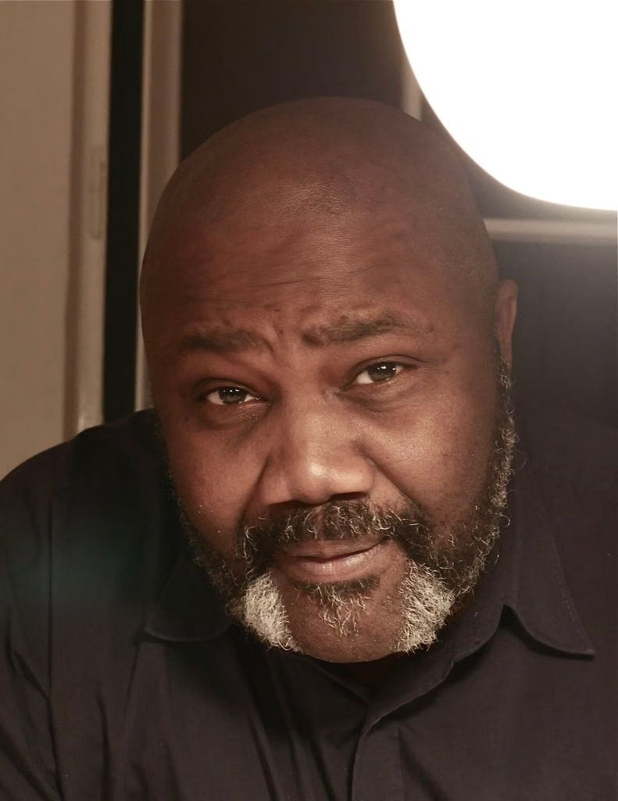
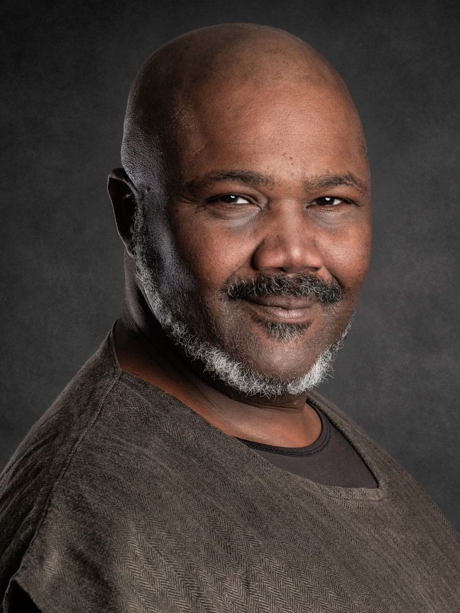

Taught by someone who still performs.
One-to-one coaching, role work and audition preparation, in Salzburg, Vienna or at your theatre. In German – and in English when a role calls for it.

Acting coach · Director · Actor
Trained in London, former ensemble member of the Schaubühne Berlin and the Burgtheater. Now in Salzburg and Vienna – in English and in German.

One-to-one coaching, role work and audition preparation, in Salzburg, Vienna or at your theatre. In German – and in English when a role calls for it.
“Directing is an extension of acting, and teaching an extension of directing.”
Born in Lagos, raised and trained in England. The Moscow Art Theatre in 1989, the German-speaking theatre since 1994.
Today I live in Salzburg and work in three professions that belong together. What I pass on in class comes from productions I am working on, not from a textbook. I speak English, German and French.
From London via Berlin and Vienna to Salzburg. A selection.
All roles and venuesTrained at the Webber Douglas Academy of Dramatic Art. Then at the Royal National Theatre, the Royal Court, the Royal Shakespeare Company and Shakespeare’s Globe.
Ensemble until 1997, including Orestes and Hotel Orpheu.
Ensemble, including Don Karlos and Twelfth Night.
First production as director: Wole Soyinka’s The Swamp Dwellers at the National Theatre of Nigeria.
Othello, directed by Rikki Henry. Covered by The New York Times.
Coverage of the work, linked to the original.
I reply within three working days, in English or German.